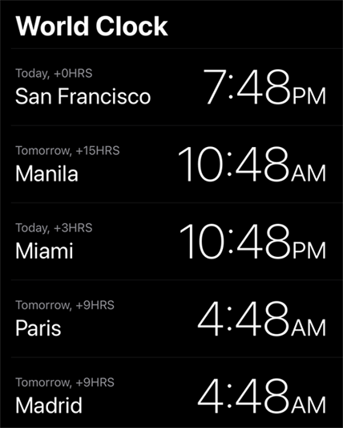
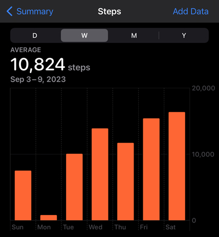
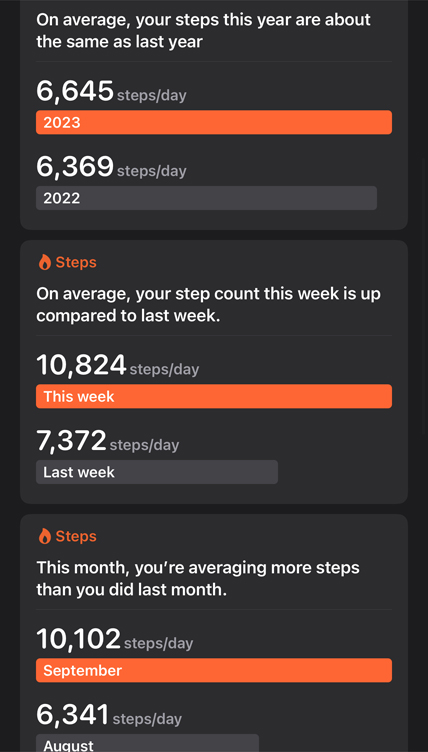
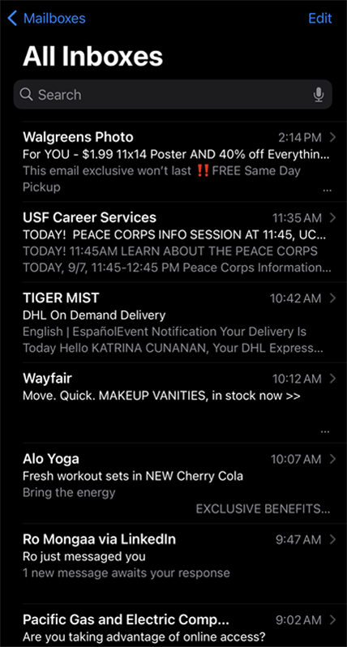
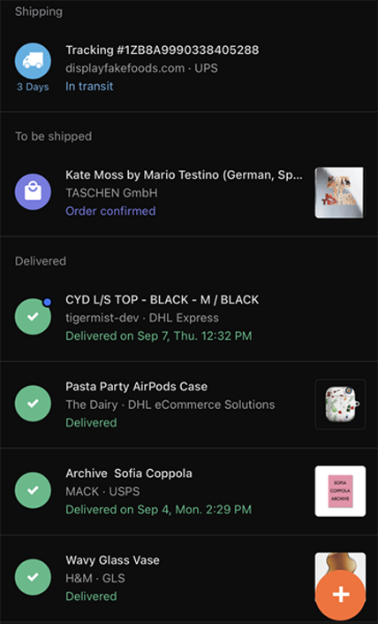
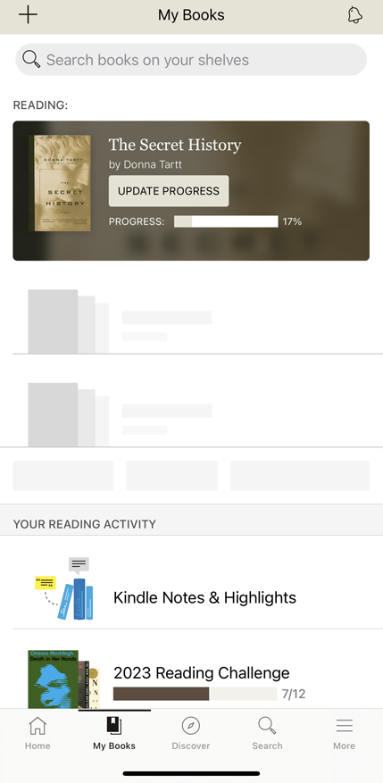
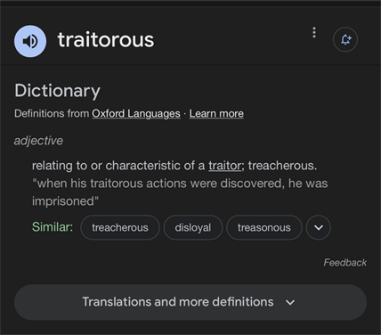
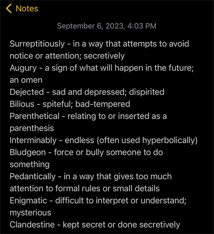

A day in my digital life
First, I check the time to know both my own and my friends' and family's time around the world.
I always go on a walk in the morning and today I chose to walk to the Apple Store.
Checking my daily steps
Checking my health stats and walking highlights.
I always listen to something on Spotify during my walks and, today, I let my AI DJ pick my music.
When I come back home, I check my mailbox
I also track my packages to see if anything arrives today
⚠️My BeReal went off! ⚠️ Time to "Be Real" and see what everyone else is up to. I can also see where they are and what music they're listening to!
If I get bored or distracted, I play a game.
Oops, got more distracted and now I'm on YouTube
OH NO! I ended up on the worst app! This is where I accidentally get stuck for around 2 hours.
Now I'm gonna read my book. But I can't read it without updating social media! 🙄
I don't know what a word in my books means so I google it
I add the word and its meaning to my notes app
I tried to get started on work but got stuck back onto social media again and texts. I didn't include my screen time for a reason 😬.